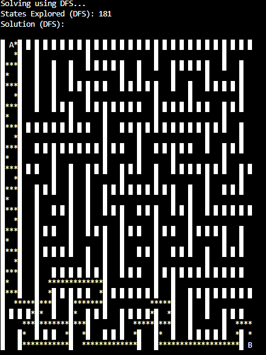
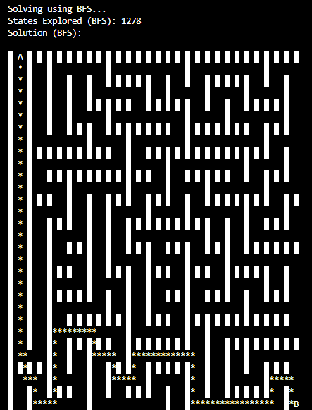
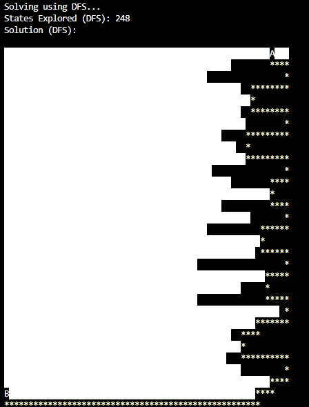
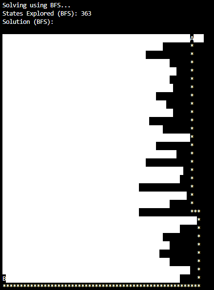
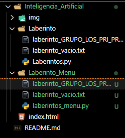
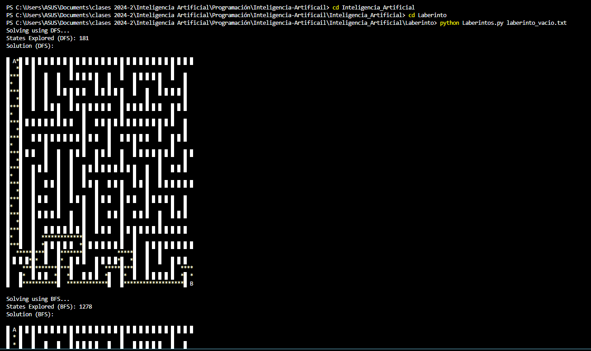
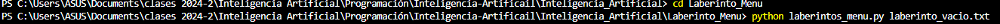
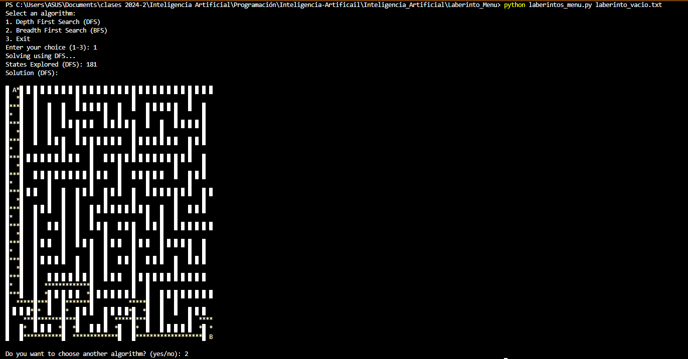

En cuanto a la exposición se presentaron multiples casos y eperiencias basadas en el cuidado y seguridad de nuestros datos nos dieron pautas para mejorar la seguridad de nustros datos, el porque se implementa la computación en la nube en las empresas y por ultimo el camino de la tecnología y como empezar a implementar la inteligencia artificial
Es aprendimiento y almacenamiento constante con lo cual genera patrones de reconocimiento y busqueda para llevar un camino de soluciones a una problematica expuesta
Se presentaron multiples clases de búqueda para implementar en ciertos tipos de casos, vimos varios terminos
° Búsqueda -Agente -Estado -Acciones -Modelo de transición(Estado-Acción) -Espacio de estados -Red de nodos dirigidos -Prueba de estado -Costo de ruta ° Problemas de búsqueda -Estado inicial -acciones Modelo de transición -Evaluación de meta ° Solución ° Solución Optima ° NODO ° Aproximación ° Aproximación revisada ° Pila LIFO(ultimo sale primero) Búsqueda en profundidad (Al nodo más profundo) Búsqueda en amplitud(Busca hacia los lados, los más superficiales) Cola Búsqueda uniformada
| Laberinto | Algoritmo | Estados Explorados | Descripción de la Solución | Imagen de la Solución |
|---|---|---|---|---|
| laberinto_vacio | DFS | 181 | El DFS encontró una solución con un recorrido que explora varios caminos antes de llegar a la meta. |  |
| BFS | 1278 | El BFS exploró muchos más estados pero también encontró una solución con un camino más corto y directo. |  | |
| laberinto_GRUPO_LOS_PRI_PRA | DFS | 248 | El DFS encontró una solución que atraviesa varias secciones con múltiples desvíos, pero llega a la meta. |  |
| BFS | 363 | El BFS encontró un camino más eficiente, con menos desvíos, llegando a la meta con menos exploraciones en total. |  |
import tensorflow as tf # Importa la biblioteca TensorFlow, que es una plataforma de código abierto para la creación y entrenamiento de modelos de aprendizaje automático y aprendizaje profundo. import numpy as np # Importa la biblioteca NumPy, que proporciona soporte para arreglos y matrices multidimensionales, así como funciones matemáticas para operar con ellos.
celsius = np.array([-40, -10, 0, 8, 15, 22, 38], dtype=float) # Crea un arreglo de NumPy llamado 'celsius' que contiene temperaturas en grados Celsius. # Los valores se especifican como una lista y se convierten en un arreglo de tipo float (número de punto flotante). fahrenheit = np.array([-40, 14, 32, 46, 59, 72, 100], dtype=float) # Crea un arreglo de NumPy llamado 'fahrenheit' que contiene temperaturas en grados Fahrenheit. # Al igual que en el caso anterior, los valores se especifican como una lista y se convierten en un arreglo de tipo float.
# capa = tf.keras.layers.Dense(units=1, input_shape=[1]) # Crea una capa densa (fully connected) de TensorFlow con 1 unidad (neurona) y una forma de entrada de 1, # que indica que la entrada tendrá una sola característica. Esta línea está comentada y no se ejecuta. # modelo = tf.keras.Sequential([capa]) # Crea un modelo secuencial en TensorFlow que consiste en la capa definida anteriormente. # Esta línea también está comentada y no se ejecuta. oculta1 = tf.keras.layers.Dense(units=3, input_shape=[1]) # Crea la primera capa oculta del modelo, que tiene 3 unidades (neuronas) y una forma de entrada de 1, # lo que significa que aceptará un único valor de entrada. oculta2 = tf.keras.layers.Dense(units=3) # Crea la segunda capa oculta del modelo, que también tiene 3 unidades (neuronas). # Esta capa no necesita especificar la forma de entrada, ya que TensorFlow puede inferirla automáticamente # a partir de la capa anterior. salida = tf.keras.layers.Dense(units=1) # Crea la capa de salida del modelo, que tiene 1 unidad (neuronas), # lo que indica que el modelo producirá un único valor como salida. modelo = tf.keras.Sequential([oculta1, oculta2, salida]) # Crea un modelo secuencial en TensorFlow que consiste en las capas definidas anteriormente: # oculta1, oculta2 y salida, formando así una red neuronal simple con dos capas ocultas.
modelo.compile( # Prepara (compila) el modelo definiendo el optimizador y la función de pérdida que se utilizarán para entrenarlo. optimizer=tf.keras.optimizers.Adam(0.1), # Especifica el optimizador que se usará durante el entrenamiento. En este caso, se usa el optimizador Adam # con una tasa de aprendizaje de 0.1. Adam es un optimizador que combina las ventajas de los métodos # 'AdaGrad' y 'RMSProp', lo que lo hace eficaz en muchos tipos de problemas de aprendizaje automático. loss='mean_squared_error' # Especifica la función de pérdida que el modelo debe minimizar durante el entrenamiento. # En este caso, se utiliza el 'error cuadrático medio' (mean squared error), que mide la diferencia promedio # al cuadrado entre los valores predichos por el modelo y los valores reales. Esta función es comúnmente # utilizada en problemas de regresión. )
print("Comenzando entrenamiento...") # Imprime un mensaje en la consola indicando que el proceso de entrenamiento del modelo está comenzando. historial = modelo.fit(celsius, fahrenheit, epochs=1000, verbose=False) # Inicia el proceso de entrenamiento del modelo usando el método 'fit'. # - 'celsius' son los datos de entrada (temperaturas en grados Celsius). # - 'fahrenheit' son los datos de salida (temperaturas en grados Fahrenheit). # - 'epochs=1000' especifica que el modelo será entrenado durante 1000 iteraciones completas sobre el conjunto de datos. # - 'verbose=False' significa que no se mostrarán mensajes detallados sobre el progreso del entrenamiento. print("Modelo entrenado!") # Imprime un mensaje en la consola indicando que el modelo ha terminado su proceso de entrenamiento.
import matplotlib.pyplot as plt # Importa la biblioteca matplotlib.pyplot, que se utiliza para crear visualizaciones y gráficos en Python. plt.xlabel("# Epoca") # Establece la etiqueta del eje X en el gráfico como "# Epoca", que indica que se mostrarán las épocas (iteraciones) del entrenamiento. plt.ylabel("Magnitud de pérdida") # Establece la etiqueta del eje Y en el gráfico como "Magnitud de pérdida", que indica que se representará la magnitud de la pérdida del modelo durante el entrenamiento. plt.plot(historial.history["loss"]) # Crea un gráfico de líneas que muestra la magnitud de la pérdida (loss) a lo largo de las épocas (epochs). # 'historial.history["loss"]' accede a los valores de pérdida almacenados durante el entrenamiento, # que se utilizan para visualizar el rendimiento del modelo a lo largo del tiempo.
print("Hagamos una predicción!") # Imprime un mensaje en la consola indicando que se va a realizar una predicción con el modelo entrenado. resultado = modelo.predict([100.0]) # Usa el modelo para hacer una predicción sobre el valor de entrada 100.0 (grados Celsius). # 'modelo.predict()' toma un arreglo de entradas y devuelve las predicciones del modelo. # En este caso, se pasa un arreglo que contiene un solo valor (100.0). print("El resultado es " + str(resultado) + " fahrenheit!") # Imprime el resultado de la predicción en la consola. # Convierte el resultado (que es un arreglo de NumPy) a una cadena de texto utilizando 'str()' # y lo concatena con el mensaje indicando que el resultado está en grados Fahrenheit.
print("Variables internas del modelo") # Imprime un mensaje en la consola indicando que se van a mostrar las variables internas del modelo, # específicamente los pesos de las capas. #print(capa.get_weights()) # Esta línea está comentada, por lo que no se ejecutará. # Si estuviera activa, mostraría los pesos de la capa 'capa', que está definida pero no se usa en el modelo actual. print(oculta1.get_weights()) # Muestra en la consola los pesos y sesgos de la primera capa oculta ('oculta1') del modelo. # 'get_weights()' devuelve una lista que contiene dos arreglos: el primer arreglo son los pesos, # y el segundo son los sesgos asociados a esa capa. print(oculta2.get_weights()) # Muestra en la consola los pesos y sesgos de la segunda capa oculta ('oculta2') del modelo. # Al igual que antes, 'get_weights()' devuelve una lista con los pesos y sesgos de esta capa. print(salida.get_weights()) # Muestra en la consola los pesos y sesgos de la capa de salida ('salida') del modelo. # Esta línea también utiliza 'get_weights()' para obtener y mostrar la información correspondiente a esta capa.
Para poder ejecutarlo recuerda estar en las rutas correctas
| Rutas |
|---|
|  |
|  |
|  |
|  |